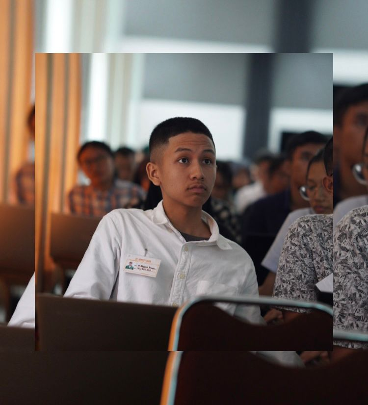
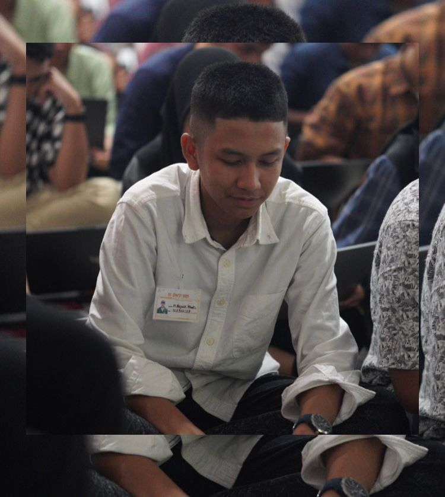
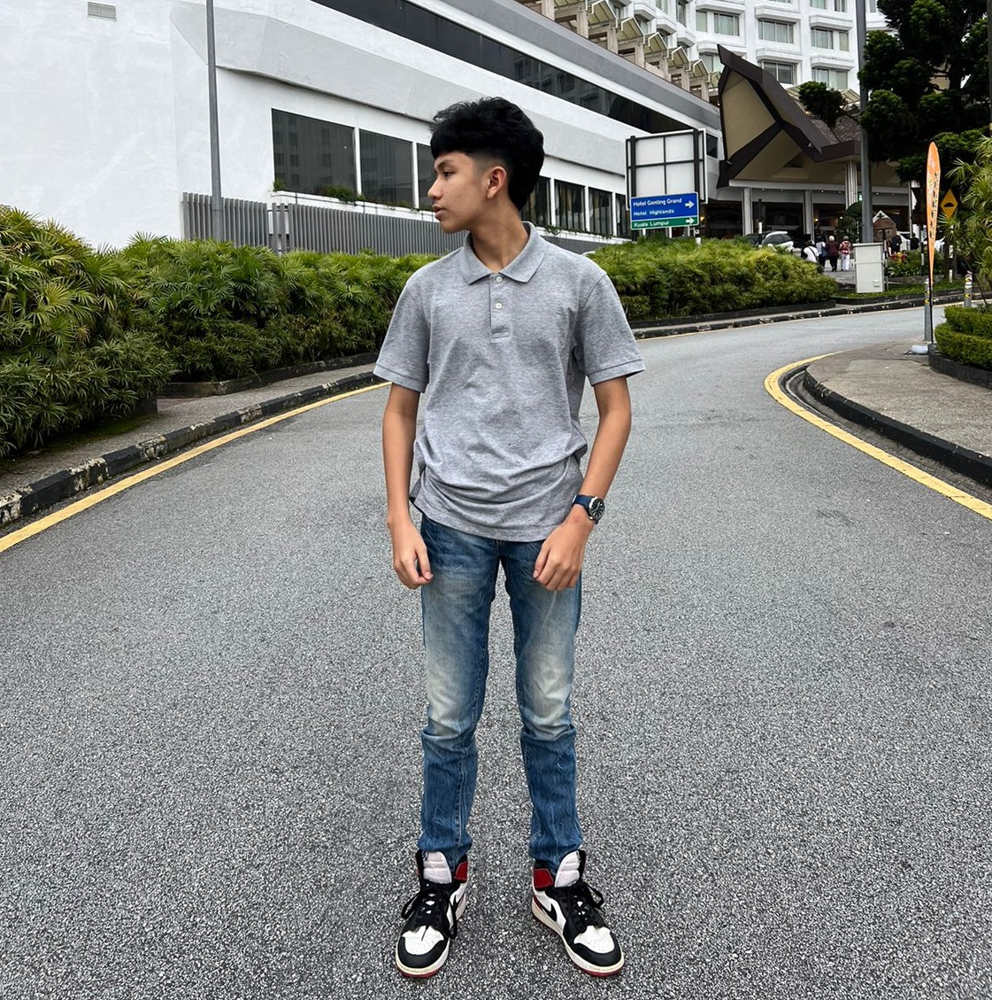
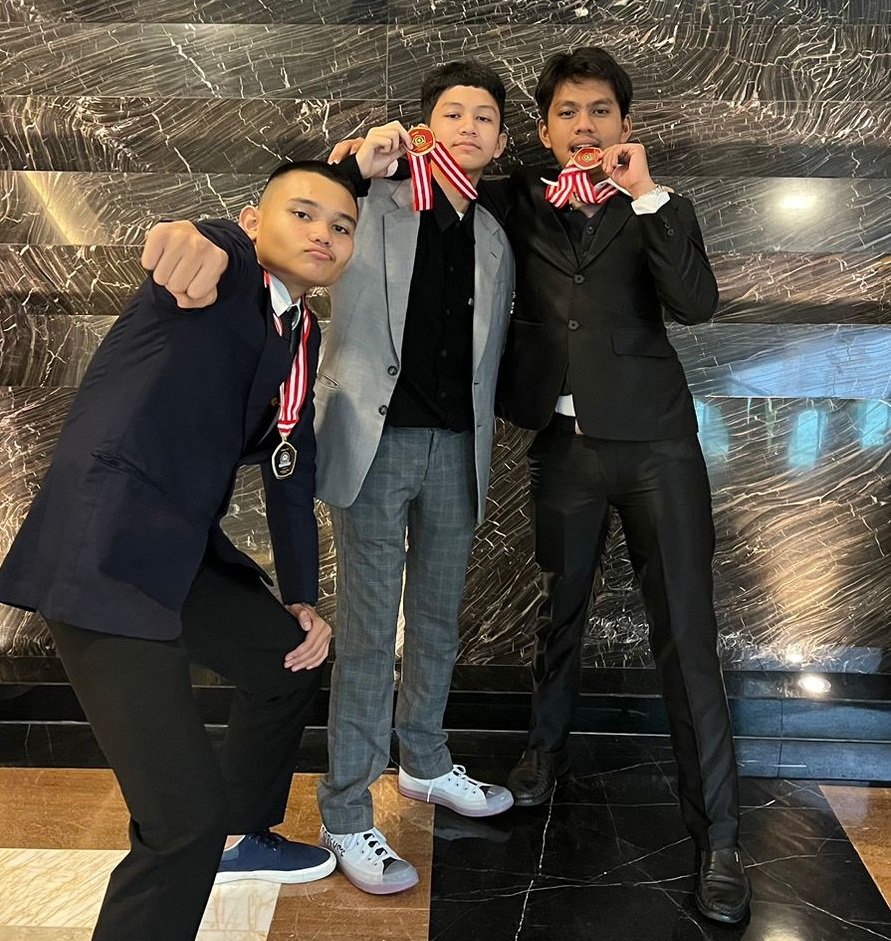
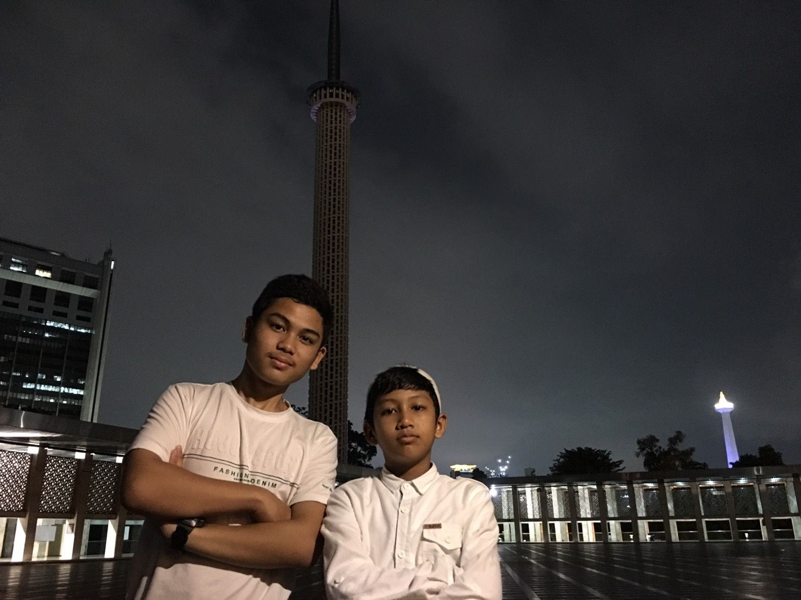
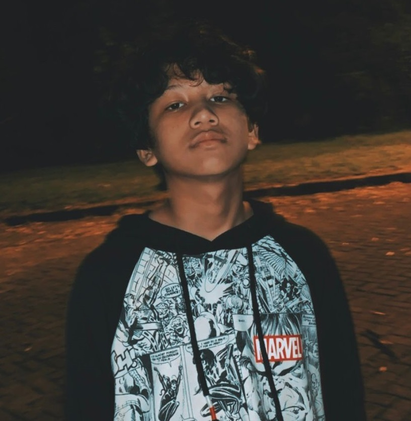

Muhammad Abyan Khairi
 -MainMenu-
- Profile
- Pendidikan
- Pengalaman
- Keterampilan
-
-Profile

Hai, perkenalkan Nama lengkap saya Muhammad Abyan Khairi. Usia saya 17 tahun berasal dari kota Medan Sumatera Utara
-
-Pendidikan
- SDIT HIKMATUL FADHILLAH (5-11 tahun)
- SMPIT HIKMATUL FADHILLAH (12-14 tahun)
- MAN 2 MODEL MEDAN (15-17 tahun)
- Teknologi Informasi USU (Target lulus di usia 21 tahun)

-
-Pengalaman
- Menjadi Finalis Olimpiade Kompetisi Matematika Nalaria Realistik(KMNR) saat kelas 2 SMP
- Memenangkan Lomba Adzan di mesjid sekitar saat kelas 3 SMP
- Menjadi ketua pengurus Ekskul Robotic M2MM saat kelas 2 SMA

-
-Keterampilan
- Robotic skill, Junior programmer & Rubic solver
- Media Sosial, Aplikasi produktivitas, dan hubungan relasi masyarakat
- Kepemimpinan, Manajemen waktu, dan kolaborasi
- Jujur, Kompeten, pekerja keras

 @abyannkhairii
@abyannkhairii
088263644132